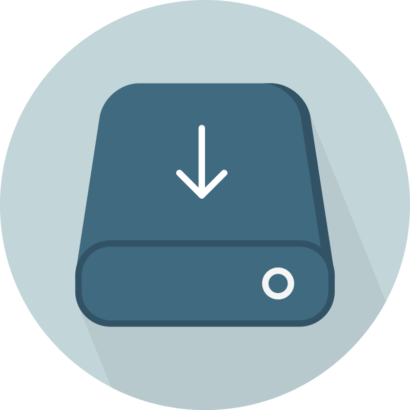
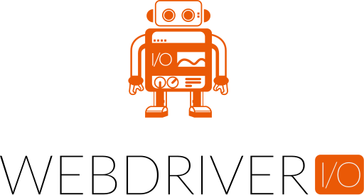

04 — Skills
Technical Arsenal
Languages
Expert
Expert

SQLAdvanced
Test Frameworks
Playwright
Expert
Expert
Selenium
Advanced
Advanced
Katalon Studio
Advanced
TestComplete
Proficient
API Testing
Expert
Newman
Advanced
Contract Testing
Advanced
Microservices Testing
Advanced
Mobile Testing
Advanced

WebDriverIOAdvanced
Android Testing
Advanced
iOS Testing
Advanced
Cloud & Visual
BrowserStack
Advanced
Sauce Labs
Advanced
Applitools
Advanced
JMeter
Proficient
CI/CD & DevOps
Advanced
GitHub Actions
Advanced
GitLab CI
Advanced
Testing Methodologies & Practices
Page Object Model (POM)
BDD / Gherkin
Data-Driven Testing
Modular Framework Design
Visual Regression Testing
Performance Testing
Risk-Based Testing
Exploratory Testing
Agile / Scrum
Contract Testing
Parallel Execution
Test Planning & Strategy